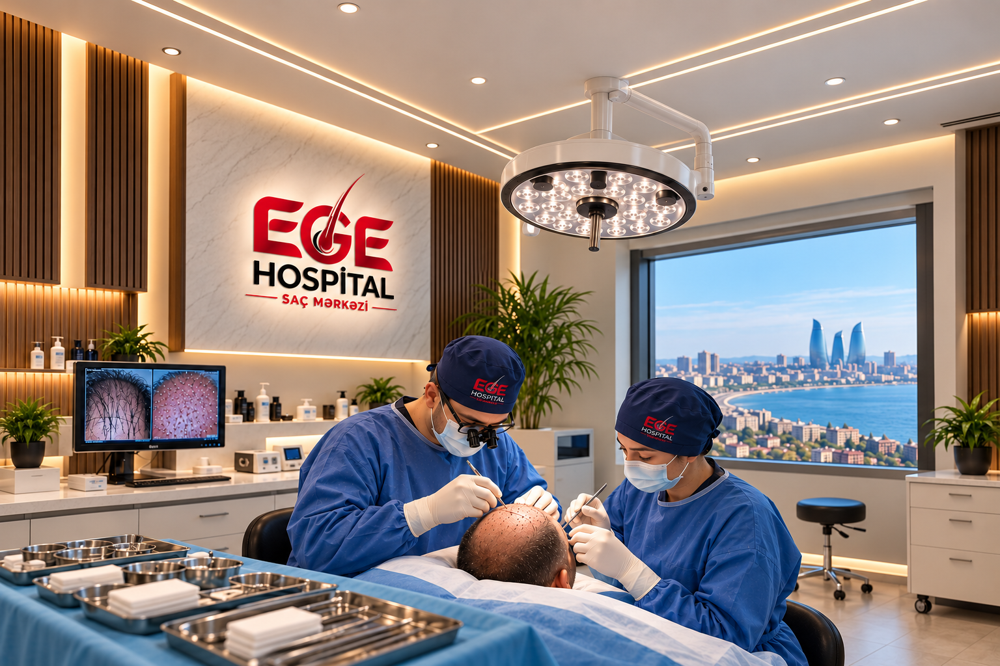
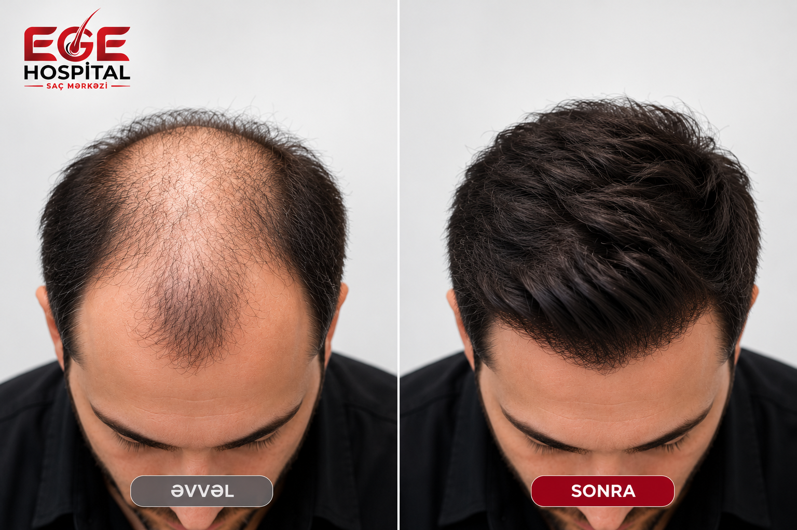

Hekayə yenidən başlayır.
Ege Hospital Saç Əkimi Mərkəzi müasir saç əkimi texnologiyalarını, beynəlxalq təcrübəni və xəstəxana infrastrukturunun imkanlarını birləşdirən ixtisaslaşmış mərkəzidir.
Xəstəxana şəraitində saç əkimi
Online saç analizi
Saçınızın şəklini bizə göndərin, ilkin dəyərləndirməni mütəxəssislərimiz edib sizə geri dönüş edək.
WhatsAppNiyə Ege Hospital
Saç Əkimi Mərkəzi?
Xəstəxana şəraitində saç əkimi
Müasir DHI texnikası
Türkiyədən dəvət olunmuş mütəxəssislər
Fərdi yanaşma və planlama
Tibbi nəzarət və sonrakı qulluq
Nəticələrimiz
Prosedurun planlaşdırılması zamanı saçın mövcud vəziyyəti, donor sahəsinin potensialı və pasiyentin fərdi ehtiyacları qiymətləndirilir.
Nəticələrimiz
SonraƏvvəl